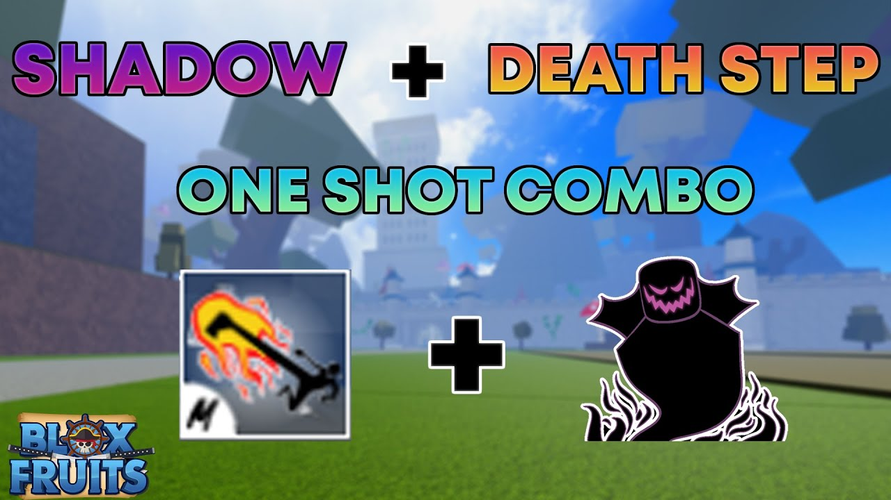

Combos fáceis
.jpg)
Vamos começar com um combo fácil que é o de ice,dragon talon e spike trident, ele é um dos combos mais fáceis de usar por causa da ice que congela e por causa do dano que ela dá no oponenete. O combo é:
V ice, C ice,
Z ice, X dragon talon, Z dragon talon,
X spike trident e C dragon talon
Outro combo fácil é o de shadow, death step e yama. Esse combo é um dos mais fáceis de se utilizar por causa do seu dano e por causa do seu stun. Esse combo é bem utilizado por causa do dano da shadow e do death step e a yama serve para você fazer o cara voltar para o combo depois de ser lançado para cima. O combo é:
Z shadow, X yama,
V shadow, C death step,
Z death step e X death step
.jpg)
Esse é um dos combos mais fáceis e spam do jogo, o combo de rumble,god human e cdk. Um combo muito utilizado por bounty hunters iniciantes ou nível médio,esse combo utiliza ponto em soco, defesa e espada. É um combo que tem várias variações como com outros estilos de luta ou outras frutas. O combo é:
x rumble, z cdk,
x cdk, z god,
c god e x god

Combo de mini yoru, uma das espadas mais difíceis de se conseguir.O combo é rumble, mini yoru e god human, esse combo utiliza ponto em soco, defesa e espada. Ele é um combo fácil de se aprender e muito forte. O combo é:
x rumble, z mini yoru,
x mini yoru, z god,
c god e x god